Uma tela, sem abas
Lateral, request e resposta. Clicar troca o conteúdo; nada se empilha. Paleta de comandos com Ctrl+P.
Uma tela, sem abas. Coleções em arquivos YAML que você versiona no git, segredos criptografados com o chaveiro do sistema e import direto do Insomnia. Feito em Go, leve, para Linux, Windows e macOS. Código aberto, local primeiro, sem conta.
Ubuntu, Debian e derivados · qualquer distro com AppImage
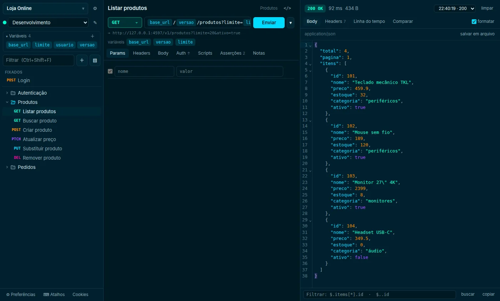

zeno run
Feito pra quem passa o dia testando APIs: rápido no teclado, fácil de versionar e sem surpresas.
Lateral, request e resposta. Clicar troca o conteúdo; nada se empilha. Paleta de comandos com Ctrl+P.
Cada request é um arquivo legível na sua pasta. Revise em PR, edite no editor favorito, o app recarrega sozinho.
{% response %} pega token, header ou campo de outro request e só reenvia quando o valor expira.
Senhas e tokens cifrados com AES-256-GCM, chave no chaveiro do sistema (gnome-keyring/KWallet, DPAPI, Keychain). O YAML pode ir pro git.
JavaScript antes e depois do envio, compatível com Insomnia e Postman, e checagens sem código.
Rode pastas inteiras com dados CSV/JSON e relatório JUnit, no app ou com zeno run no CI.
O request exatamente como saiu, cada redirect, DNS, TLS, espera e o certificado do servidor.
20 linguagens e 37 bibliotecas, coloridas como numa IDE, com variáveis e tags já resolvidas. Do cURL ao Rust.
Workspace no repo do projeto: status por request, diff, commit, pull, push e branches.
GraphQL com autocomplete pelo schema, WebSocket, Server-Sent Events ao vivo e gRPC com reflection ou .proto.
Todos os fluxos, login no navegador e token renovado sozinho. Proxy, CA própria e certificado de cliente (mTLS).
Salve uma resposta como exemplo e ligue um servidor local que responde cada rota do workspace com ela.
Variáveis viram badges em todos os campos e editores. Digite {{ e escolha da lista, com valor e origem. Clique num badge pra ver de onde vem, editar, mover de nível ou trocar por outra variável. Arraste os chips pra URL, e arraste um badge pra fora pra remover.
uuid, timestamp, faker, hash, base64, prompt…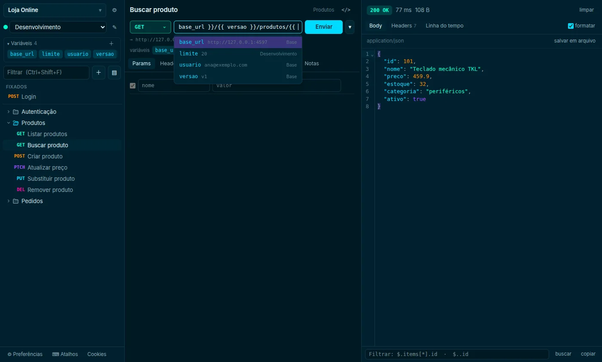
Use o token do login em toda a pasta. A tag {% response %} tem editor visual com prévia do valor e decide quando reenviar: nunca, sem histórico, quando expirar ou sempre.
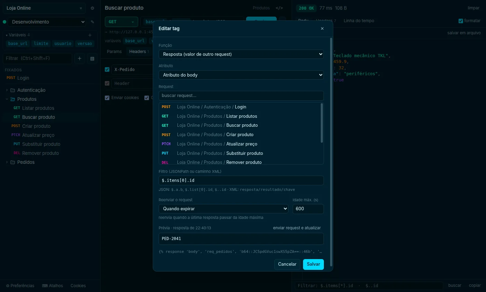
Coloque grpc:// ou grpcs:// na URL, clique em Descobrir e escolha o método. A mensagem é JSON, com exemplo gerado a partir do schema; headers viram metadata e a auth é a mesma do HTTP.
.proto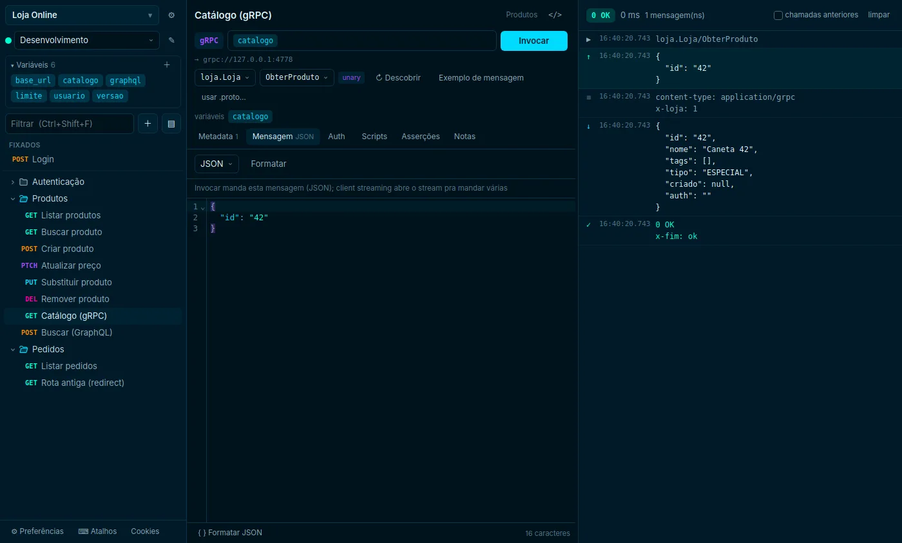
O editor de GraphQL busca o schema da sua API e completa campos e argumentos. URLs ws:// abrem uma conexão WebSocket com log de mensagens, e respostas text/event-stream mostram cada evento conforme chega.
{{ variáveis }} do ambiente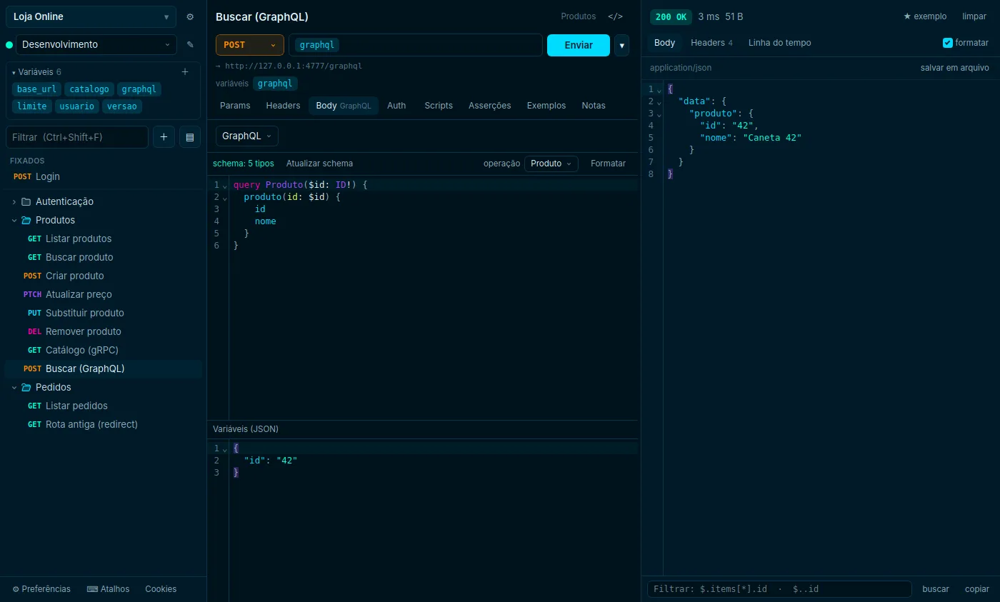
JSON formatado e filtrado com JSONPath ou XPath, busca com Ctrl+F, imagens, PDF e HTML renderizados, e respostas de 50 MB sem travar.
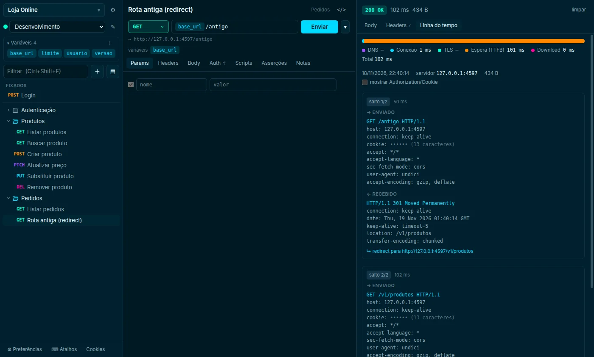
O mesmo gerador do Insomnia, com 20 linguagens e 37 bibliotecas: cURL, HTTPie, fetch, axios, Python requests, Go, Java, C#, PHP, Ruby, Kotlin, Swift, Rust, PowerShell… Com realce de sintaxe de cada linguagem e indentação de 2 espaços.
{{ variáveis }} como referênciacurl na URL e o request se monta sozinho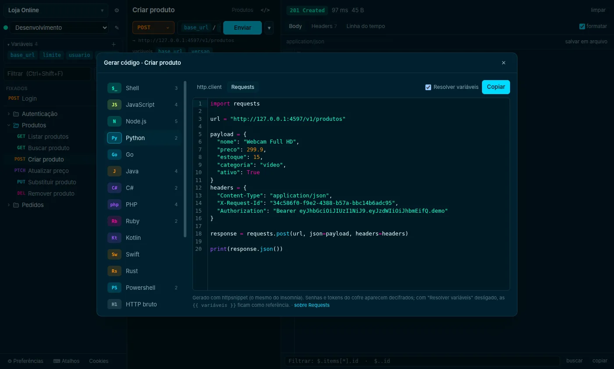
Paleta de comandos com busca difusa em todos os workspaces, atalhos iguais aos do Insomnia (e editáveis) e importação dos seus atalhos personalizados.
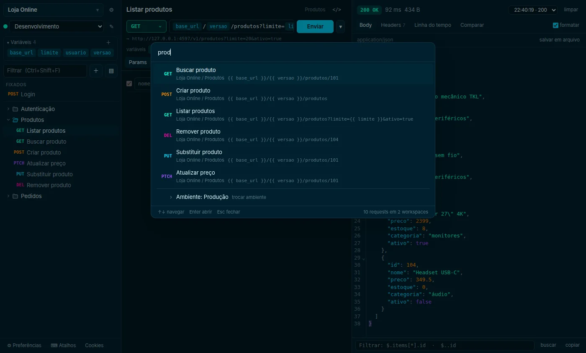
Clique em Entrar com GitHub, autorize no navegador e envie os workspaces pra um repositório privado seu. Baixe em outra máquina com um clique. Sem servidor do Zeno no meio.
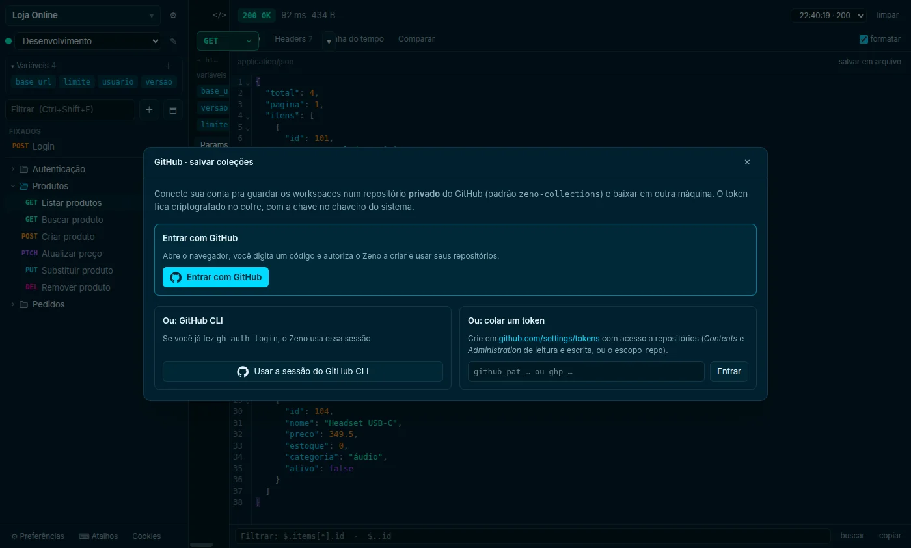
TOTVS, Aura Dark, Monokai, Synthwave '84, Dracula, One Dark, Nord, Tokyo Night, Catppuccin, Gruvbox, Solarized, Night Owl, GitHub, Rosé Pine, Palenight e mais. Troque na hora, com prévia.

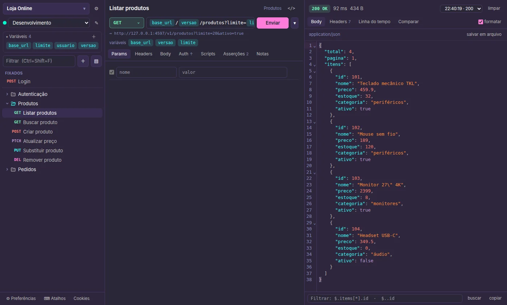
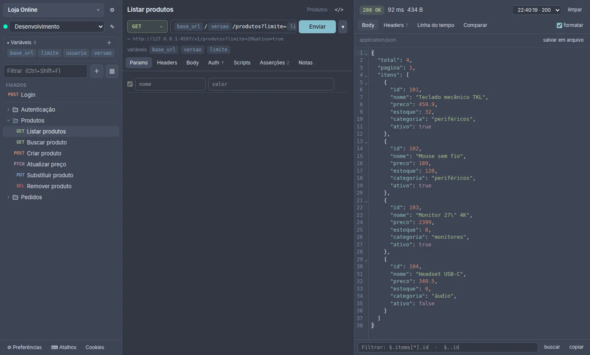
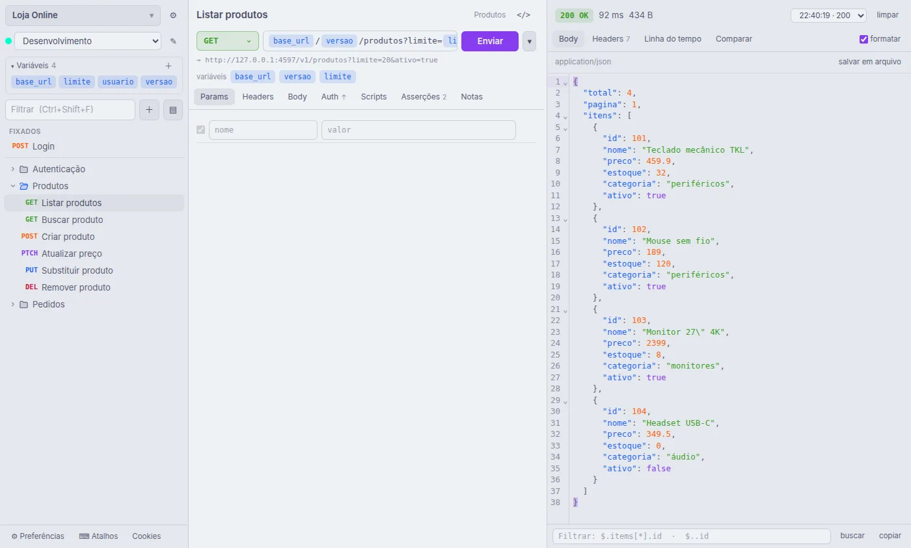
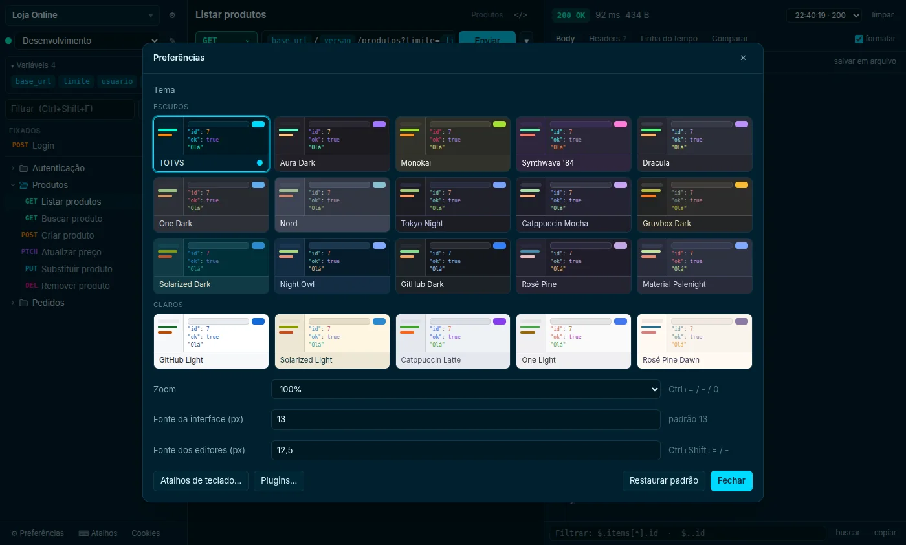
Mesmo formato: templateTags, requestHooks, responseHooks e requestActions, além de importadores. Cada plugin roda isolado, com tempo máximo; se quebrar, aparece desativado e o app segue.
module.exports.templateTags = [{
name: 'minha_funcao',
displayName: 'Minha função',
args: [{ displayName: 'Nome', type: 'string' }],
run(context, nome) {
return `Olá, ${nome}!`
}
}]
zeno run executa uma pasta ou o workspace inteiro, com ambiente, dados por iteração, variáveis extras e relatório JUnit. Sai com código ≠ 0 quando algo falha.
$ zeno run "Loja Online" Produtos --env Produção --junit relatorio.xml
✓ GET Listar produtos 200 109 ms
✓ status < 300
✓ tempo (ms) < 500
✓ POST Criar produto 201 72 ms
✓ status < 300
✓ tempo (ms) < 500
✗ DELETE Remover produto 404 45 ms
✗ status < 300 — valor: 404
Produtos: 3 request(s), 2 ok, 1 com falha · 6 teste(s), 1 falharam · 226 msBaixe o pacote da última versão. Na primeira abertura, importe do Insomnia ou crie um workspace.
$ sudo apt install ./zeno_amd64.deb$ sudo dnf install ./zeno.x86_64.rpmRode o instalador. O app ainda não é assinado: se o SmartScreen avisar, clique em Mais informações e depois em Executar assim mesmo. Há também uma versão portátil em .zip. Com o Scoop: scoop bucket add zeno https://github.com/chmenegatti/scoop-bucket e scoop install zeno.
Abra o .dmg e arraste o Zeno para Aplicativos. Na primeira abertura o macOS bloqueia (app sem notarização): em Ajustes do Sistema › Privacidade e Segurança, clique em Abrir mesmo assim. Com o Homebrew: brew install --cask chmenegatti/tap/zeno.
$ chmod +x Zeno.AppImage
$ ./Zeno.AppImage$ git clone https://github.com/chmenegatti/zeno
$ cd zeno && npm install
$ npm run dev # Go 1.26+ e Node 22+